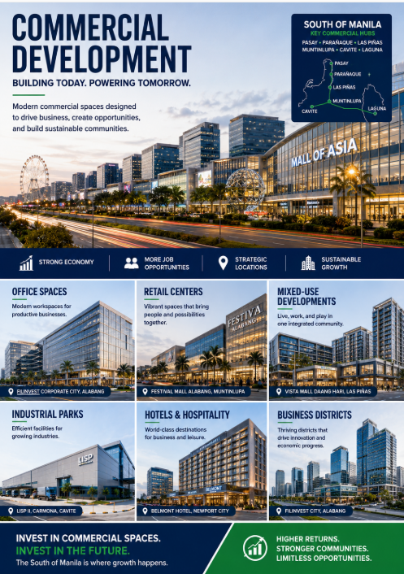
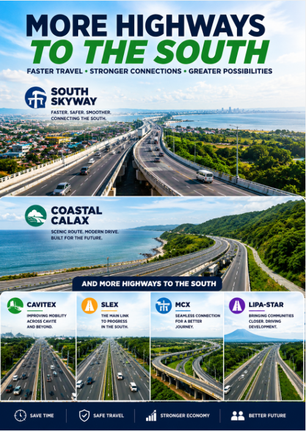

Market Update
The real estate market in South Manila and nearby growth areas continues to evolve as infrastructure expansion and economic development reshape the region. Cities connected by major highways such as South Skyway, SLEX, CALAX, CAVITEX, MCX, and Coastal Road are experiencing increased residential and commercial activity.
Improved mobility is helping businesses expand while making communities more accessible for families, professionals, and investors. Property demand remains active due to the continued growth of mixed-use developments, commercial centers, and modern residential communities.
Market analysts continue to observe rising interest in suburban living as more families seek larger living spaces, improved accessibility, and modern developments outside heavily congested urban centers.
Affordable Homes
Affordable housing remains one of the strongest sectors in the Philippine real estate industry. Developers continue launching projects designed for first-time buyers, OFWs, and growing families. Flexible financing options and low monthly payment schemes are making homeownership more achievable.
Communities in Cavite, Laguna, and South Manila are becoming increasingly attractive because of their balance between affordability, accessibility, and modern amenities.
Many residential developments now include clubhouses, parks, open spaces, and commercial areas designed to support comfortable family living and long-term community growth.
Investment
South Manila is becoming one of the country's most promising investment corridors due to continuous infrastructure development and increasing commercial expansion. Strategic locations near transport hubs, business districts, schools, and commercial centers continue to experience rising property values.
Investors are recognizing the long-term potential of acquiring residential and commercial properties in areas positioned for future economic growth and infrastructure connectivity.
Infrastructure projects not only improve transportation efficiency but also encourage the development of businesses, tourism, logistics, and employment opportunities across the southern corridor.
Development
Large-scale infrastructure and urban development projects are transforming South Manila into a major economic growth hub. New expressways, transport systems, commercial centers, and township developments are improving accessibility while supporting long-term business and residential expansion.
The expansion of road networks and transportation systems is helping reduce travel time between Metro Manila and nearby provinces, making southern areas more attractive for both businesses and residents.
As development continues, South Manila and nearby provinces are expected to remain attractive locations for residential communities, commercial investments, and future-ready urban developments.

Condo Boom in South Manila Continues
Developers are expanding residential projects due to increasing demand from young professionals, investors, and OFWs seeking modern urban living.
Market Update
Affordable Housing Projects Rising
More affordable subdivisions and residential communities are being launched in Cavite and nearby South Manila areas.
Affordable Homes
Investors Eye South Growth Corridor
South Manila continues to attract investors because of major infrastructure projects, transport connectivity, and commercial developments.
Investment
Infrastructure Boosts Property Values
New highways, transport systems, and commercial developments are increasing property values across South Luzon and Metro South.
Development